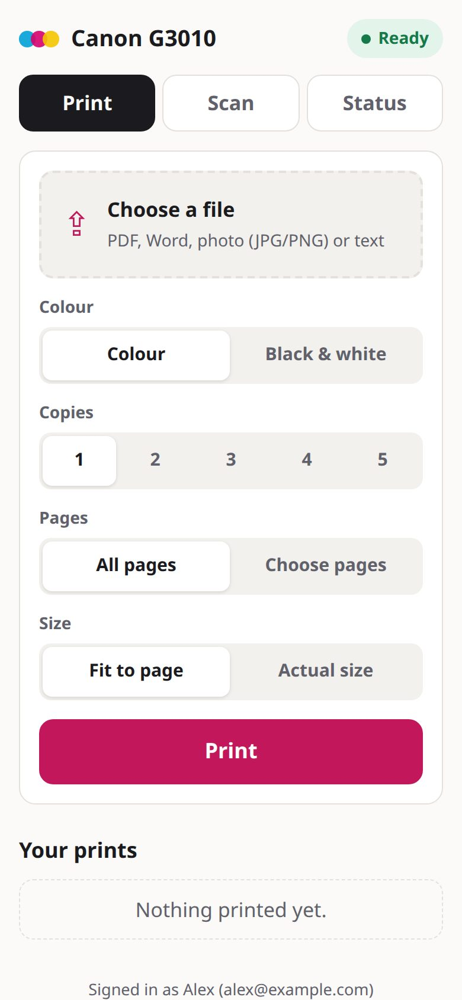
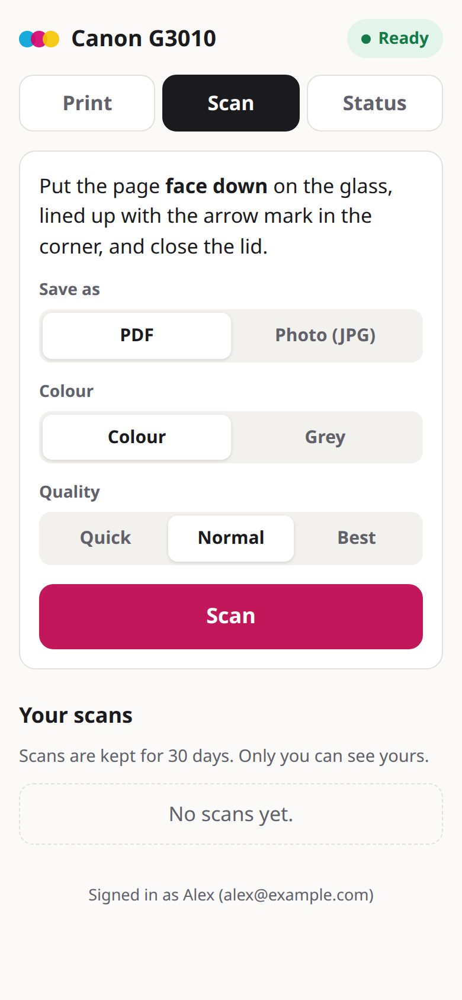
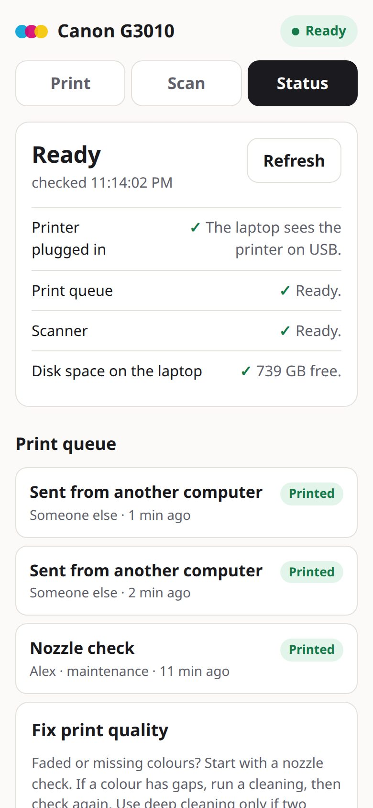

Your home printer, from any phone.
A small website for the printer at home. Everyone in the family prints, scans and sees what the printer is doing from anywhere, signed in with their own email. Built for a USB Canon PIXMA G3010 on an old Linux laptop.
How do I print to my home printer from anywhere? Plug the printer into a computer that stays on, run canon-home-printer on it, and publish it with a free Cloudflare Tunnel behind Cloudflare Access. Each person opens one address, types the code sent to their email, and prints from their phone. No port forwarding, no VPN, no app to install, and the printer doesn't need Wi-Fi.



What it does
Print from anywhere
PDF, Word, Excel, PowerPoint or photos, from any phone or laptop, on any network. Uploads are deleted once the printer has the job.
Scan to your phone
Place the page, tap Scan, get a PDF or JPG in about 13 seconds at 150 dpi. Kept 30 days.
Problems in plain words
"No progress for 2 min. Most often it's out of paper: load paper, then press Black or Color."
Fix faded colours
Nozzle check, cleaning and deep cleaning for Canon PIXMA, at most two deep cleanings a day.
Everyone signs in
Cloudflare Access emails each person a code. Only emails on your list get in.
One binary
Written in Go with the page built in. Needs CUPS and SANE, plus LibreOffice for Word files.
At a glance
| Price | Free, MIT license. Cloudflare Tunnel and Access are free for up to 50 users. |
|---|---|
| Runs on | Any Linux computer that stays on: an old laptop, a mini PC, a Raspberry Pi |
| Printer | Any CUPS printer, USB or network. Built and tested on the Canon PIXMA G3010 (MegaTank) over USB. |
| Scanner | Any SANE scanner (tested on the G3010's flatbed) |
| Files | PDF, Word (.doc, .docx), Excel, PowerPoint, OpenDocument, JPG, PNG, plain text, up to 50 MB (configurable) |
| Sign-in | Cloudflare Access, one-time code by email; every request's token is verified by the app |
| Network | Listens on 127.0.0.1 only; Cloudflare Tunnel dials out, so no open ports |
| Cleanings | Canon IVEC commands from canon-ij-maint |
How it fits together
CUPS hides who sent each job from other users, so the app keeps its own small activity log and shows a name next to every job. That way everyone knows whose print is in the way.
Set it up
- Add the printer to CUPS.
sudo apt install cups printer-driver-gutenprint sane-utils \\ libreoffice-writer-nogui fonts-crosextra-carlito fonts-noto-core sudo lpadmin -p Canon_G3010 -E -v "$(lpinfo -v | grep -o 'usb://Canon/[^ ]*')" \ -m "$(lpinfo -m | grep -i g3010 | head -1 | cut -d' ' -f1)" -o PageSize=A4 - Install the app (Go 1.22+):
git clone https://github.com/taktekhq/canon-home-printer cd canon-home-printer && go build -o canon-home-printer ./cmd/canon-home-printer sudo install canon-home-printer /usr/local/bin/ sudo install -m 640 deploy/canon-home-printer.env.example /etc/canon-home-printer.env sudo cp deploy/canon-home-printer.service /etc/systemd/system/ sudo systemctl enable --now canon-home-printer - Create a Cloudflare Tunnel with a public hostname, say
print.example.com, pointing athttp://127.0.0.1:8091, and runcloudflaredas a service. - Protect it with Cloudflare Access: a self-hosted application for that hostname, an Allow policy with
the family's emails, and the One-time PIN login. Put the team domain and the application's AUD tag in
/etc/canon-home-printer.envand restart the service.
Full steps and every setting are in the README.
Questions
Can I print to my home printer from anywhere?
Yes, if the printer is plugged into a computer that stays on. canon-home-printer runs on that computer (any Linux machine, even an old laptop or a Raspberry Pi) and gives the printer a private web page. Cloudflare Tunnel makes the page reachable from any phone or laptop on any network, and Cloudflare Access asks each person for a code sent to their email. Nothing is opened on the home router.
Does it work with a USB-only printer that has no Wi-Fi?
Yes. That is what it was built for: a Canon PIXMA G3010 connected by USB to a laptop. The website talks to the printer through CUPS on that laptop, so the printer itself never needs a network connection.
Is it safe to put my printer on the internet?
The app only listens on 127.0.0.1, so nothing on the home network or internet can reach it directly. The only way in is the Cloudflare Tunnel, and Cloudflare Access blocks anyone whose email is not on your list before a request reaches your computer. The app also checks the signature of every Cloudflare Access token itself, so a wrong tunnel setting can't let unsigned requests through.
Which printers does it support?
Printing and the status page work with any printer CUPS can drive. Scanning works with any scanner SANE (scanimage) supports. The cleaning and nozzle check buttons send Canon's IVEC maintenance commands, tested on the PIXMA G3010; other recent PIXMA and MegaTank models that use Canon's cnijfilter2 driver probably accept them too.
Can family members see each other's scans?
No. Each scan is saved in a folder for the email that made it, and only that person can list, open or delete it. Scans are deleted after 30 days. Everyone can see the print queue with who sent what, so they know when the printer is busy.
What does it cost?
Nothing. canon-home-printer is free and open source (MIT). Cloudflare Tunnel and Cloudflare Access are free for up to 50 users, which covers a family. You need a domain on Cloudflare.
What happens when the printer runs out of paper?
The job stalls without an error from the printer. canon-home-printer notices when a job shows no progress for 90 seconds and tells everyone in plain words: most often it is out of paper; load paper, then press the printer's Black or Color button.
Can I print Word documents?
Yes. Upload a .doc or .docx and it prints. The app converts Word, Excel, PowerPoint and OpenDocument files to PDF with LibreOffice on the home computer, in a second or two, then prints the PDF. Arabic and other right-to-left text keeps its shaping and direction.
Last updated 6 November 2026.